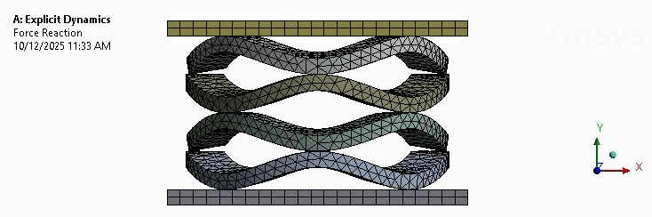
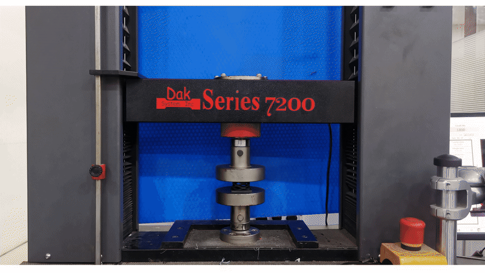
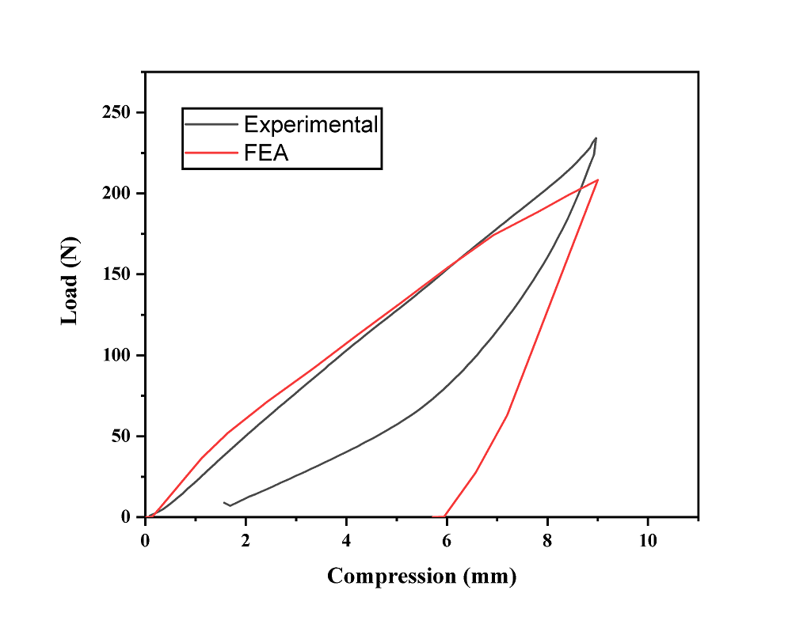
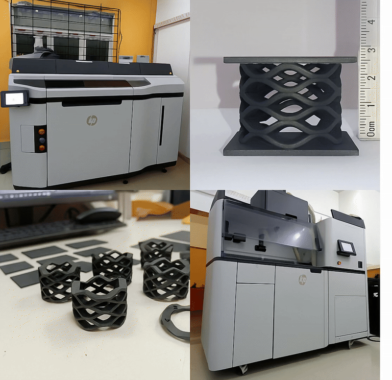
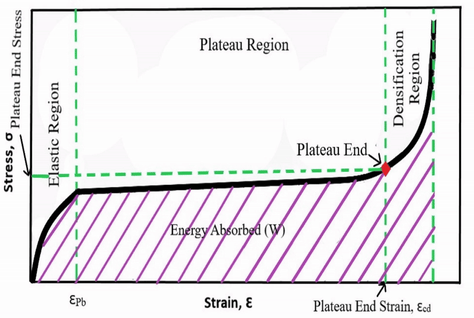
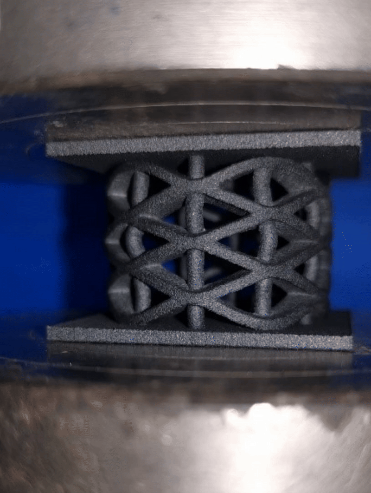

Wave Spring Optimization
Abstract: The project investigates the response of polymer-based wave springs fabricated using Multi Jet Fusion (MJF) additive manufacturing. Different infill densities were applied to optimize mechanical properties. The study evaluated stiffness, plateau stress, and energy absorption, integrating both experimental and simulation approaches.
1. Introduction
Wave springs are advanced mechanical elements used to absorb loads in confined spaces. The objective of this research is to design a polymer wave spring using flexible PA-12 material and analyze its response under compressive loading conditions.
2. Methodology
- Modeling performed using CAD software (SolidWorks)
- Manufacturing executed via MJF with PA-12 polymer
- Test specimens included 80%, 90%, and 100% infill density
- Simulations conducted in ANSYS Static Structural Module
3. Results and Discussion
Results showed increasing infill density significantly raised the spring’s stiffness. The 100% infill spring exhibited maximum plateau stress. Simulation results matched experimental behavior with an error margin under 6%.



4. Optimization
Using simulation, optimized spring geometry was achieved by modifying pitch angle and number of crests. This led to increased energy absorption without compromising compact design needs.
5. Conclusion
Wave springs produced via MJF demonstrated strong potential in replacing metallic springs for moderate-load applications. Structural integrity, customization, and additive manufacturability prove its feasibility.
6. Pre-Print Publication
https://doi.org/10.21203/rs.3.rs-2942067/v1Lattice Structure
Abstract: The lattice structure is derived from crest-to-crest wave spring geometry to enhance load-bearing capacity and energy absorption characteristics. Additive manufacturing enables complex overlapped and pin-reinforced lattice configurations.
1. Introduction
Lattice structures provide superior energy absorption compared to conventional foam-based cores. In this work, lattice structures are developed from overlapped and non-overlapped crest-to-crest wave springs with pin reinforcements.
2. Design Concept
- Overlapped crest-to-crest wave spring treated as lattice core
- Pin-reinforced lattice configurations with 5 and 10 pins
- Without-overlap lattice structures for comparative study
3. Manufacturing Process
- Fabricated using HP Multi Jet Fusion (MJF)
- Material: Polypropylene / polymer-based material
- Post-processing by bead blasting technique



4. Mechanical Characterization
Compression tests were conducted under quasi-static loading conditions. Load–compression and stress–strain responses were used to evaluate stiffness, plateau stress, densification strain, and energy absorption efficiency.
5. Results and Discussion
Overlapped lattice structures with higher pin count exhibited superior plateau stress due to improved load distribution and buckling resistance. Non-overlapped lattice structures showed higher densification strain but reduced stiffness.
6. Energy Absorption Characteristics & Conclusion
The compression response of lattice structures consists of elastic, plateau, and densification regions. Maximum energy absorption occurs within the plateau region. Overlapped and pin-reinforced lattice configurations provide improved mechanical performance suitable for cushioning, vibration isolation, and impact mitigation.